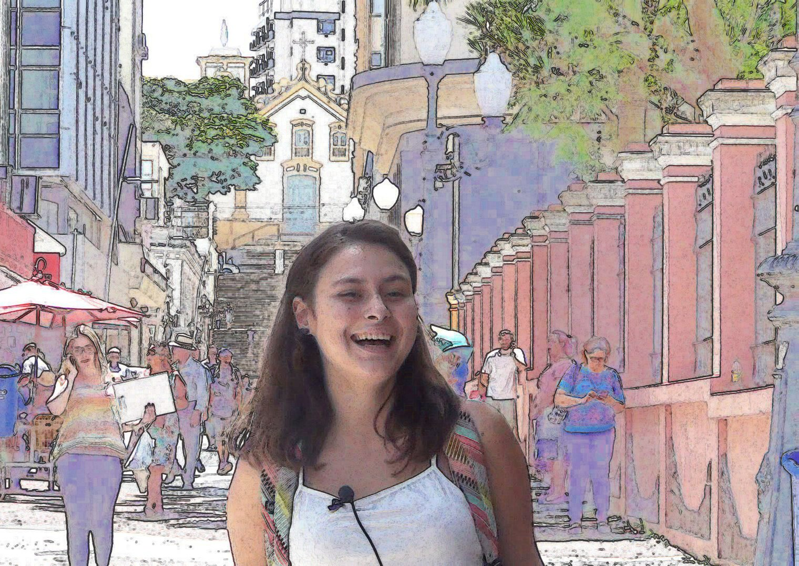
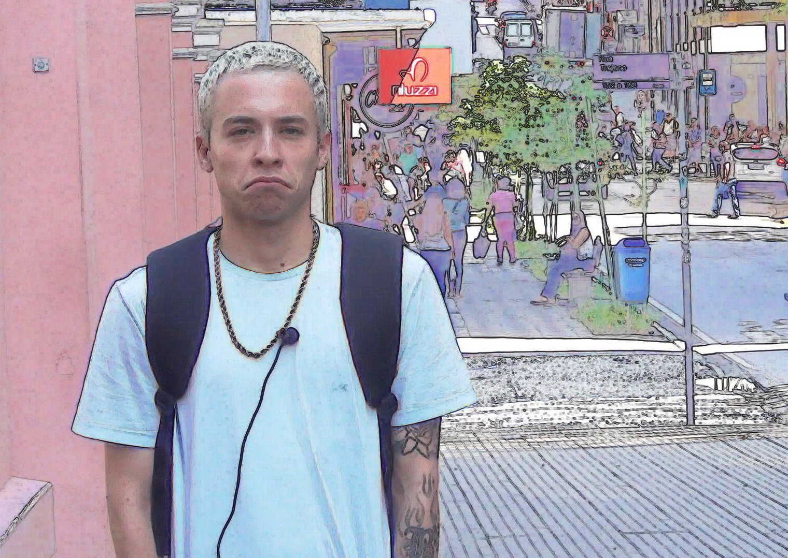

LIVRE REPORTAGEM
Format: Video art series from a street action
Year: 2016, 2018
Role: Director, Videographer and Editor
With: Daniel Postal and Julia Lazaro, assistant camera and sound on #3
Logline
I walked through the centre of Florianópolis with a camera and asked passers-by to record what was on their mind. Each testimony works as a report, freely given. ● Livre Reportagem #3 received the Young Artists Award, Contemporary Art in Santa Catarina (2018).
About the project
Livre Reportagem [Free Report] is an action in the street. In the centre of Florianópolis, the capital of Santa Catarina (Nossa Senhora do Desterro, its original name, for those who would rather not honour a historical figure better forgotten), I recorded testimonies from people to understand how people on the island think. The testimonies are like reports, and I call the action Livre Reportagem. Many of the people I met saw arriving on the island as a new beginning, a place of possibilities.
For me the work happens live. The action in the street is a pretext to talk with people from different realities; editing and showing the video is a pretext to meet again and see what those exchanges gave us.
Livre Reportagem #1 was filmed in Florianópolis in 2016. #3 followed in 2018. There is no finished #2.
Voices
A few lines from the testimonies, translated from Portuguese:
"If you stop to think, the world is a free place, and nature and the earth are so generous. But then there is greed, the wish to be bigger than others. Will the day come when we pay even to breathe?"
"We think, we make and we create. Just by thinking, we already create."
"It is very beautiful here, but I see no social action to help the people who sleep on the ground."
Desterrados
For a graphic interfaces course during my degree, I designed Desterrados, a postcard series. Each card carries an edited frame of a participant on the front and one of the most striking lines from their testimony on the back, a way of recording a still moment in the lives of the people who stopped to take part. The series was conceived to be shown alongside Livre Reportagem #3 at the Young Artists exhibition, and taken home as keepsakes by the people who took part. In the end it was not shown.


Screenings, awards and selections
- 2018: ● Young Artists Award, Contemporary Art in Santa Catarina (#3). Group exhibition dos desvios e do desver, shown at Fundação Cultural Badesc (Florianópolis), AAPLAJ (Joinville), Library of the Federal University of the Southern Frontier (Chapecó) and SESC Lages
- 2017: Group exhibition conversação~, Visual Arts Department, UDESC (#1)